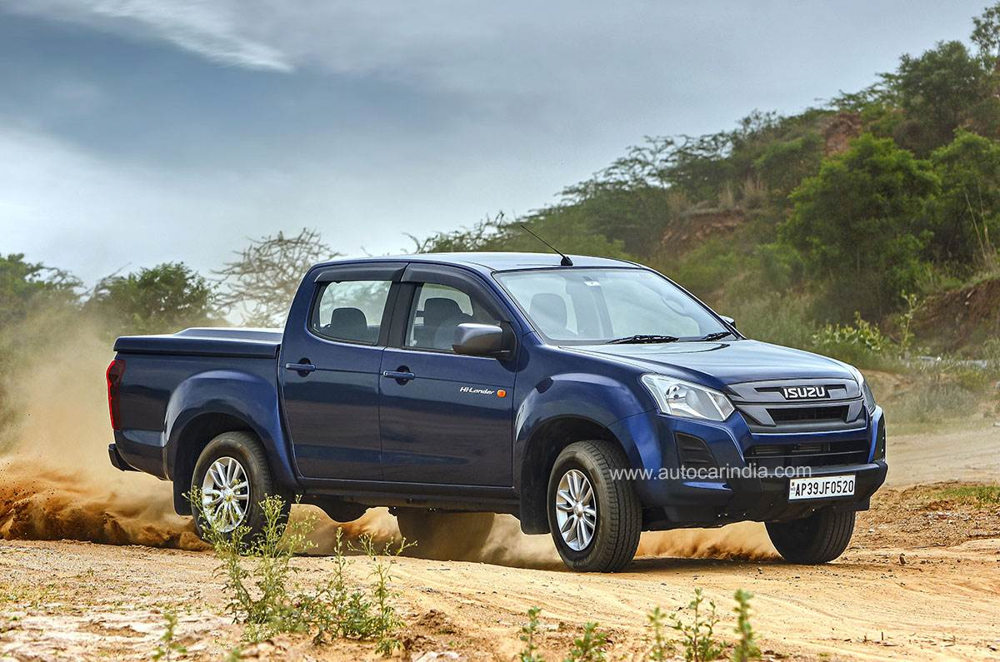
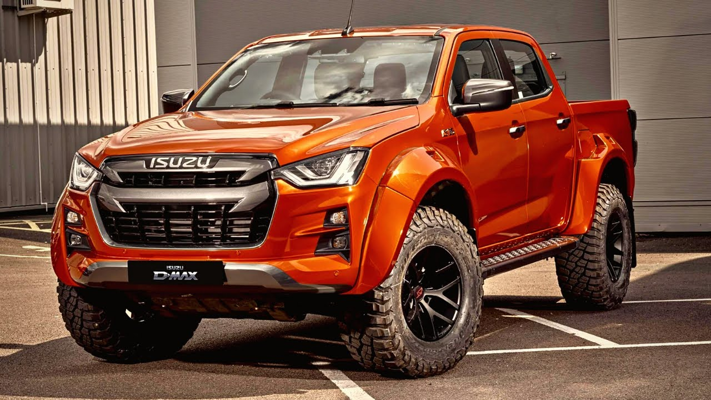
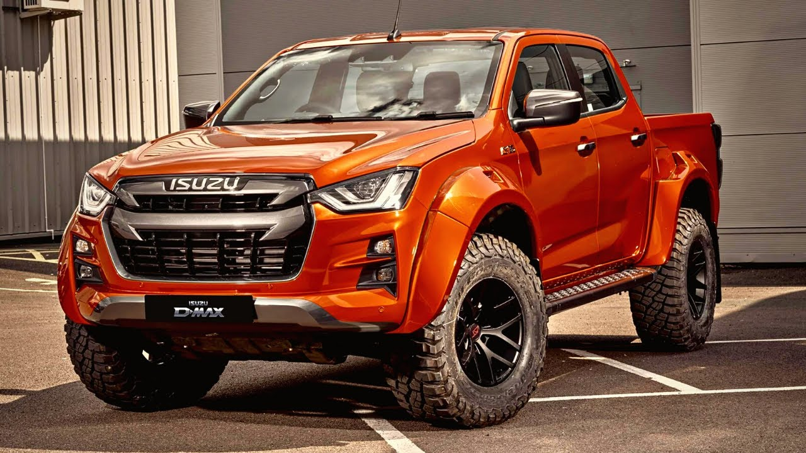

Isuzu
- Isuzu, the Japanese automobile manufacturer since 1916, was established in India with the name Isuzu Motors in the year 2012. The company manufactures and sells utility and Light Commercial Vehicles in India such as pick-up trucks which are quite popular among the masses.
- Some of its most desirable models in the market are Isuzu D-MAX, Isuzu D-MAX V-Cross and Isuzu D-Max S-Cab with the price range in India starting from INR 5.99 lakhs. Engineered to deliver solid performance on tough terrains, these Isuzu pick-up trucks ensure customer remains delighted all the time.
- Isuzu Motors has already switched over to BS-IV standards to align itself with the contemporary technology. Isuzu, the Japanese automobile manufacturer since 1916, was established in India with the name Isuzu Motors in the year 2012. The company manufactures and sells utility and Light Commercial Vehicles in India such as pick-up trucks which are quite popular among the masses.
- Some of its most desirable models in the market are Isuzu D-MAX, Isuzu D-MAX V-Cross and Isuzu D-Max S-Cab with the price range in India starting from INR 5.99 lakhs. Engineered to deliver solid performance on tough terrains, these Isuzu pick-up trucks ensure customer remains delighted all the time.
- Isuzu Motors has already switched over to BS-IV standards to align itself with the contemporary technology. Isuzu, the Japanese automobile manufacturer since 1916, was established in India with the name Isuzu Motors in the year 2012. The company manufactures and sells utility and Light Commercial Vehicles in India such as pick-up trucks which are quite popular among the masses.
- Some of its most desirable models in the market are Isuzu D-MAX, Isuzu D-MAX V-Cross and Isuzu D-Max S-Cab with the price range in India starting from INR 5.99 lakhs. Engineered to deliver solid performance on tough terrains, these Isuzu pick-up trucks ensure customer remains delighted all the time.
- Isuzu Motors has already switched over to BS-IV standards to align itself with the contemporary technology.

.jpeg) 
